Connecticut Opportunity Index
2014 Opportunity Index levels for Connecticut
Opportunity Index
The following presents the methodology and indicators for the Connecticut opportunity analysis. To download the data, go here. For more on the use of Opportunity Mapping in Connecticut, see the websites for the Open Communities Alliance, the Kirwan Institute and the Connecticut Fair Housing Center.
What is opportunity?
For this analysis, opportunity is defined as environmental conditions or resources that are conducive to healthier, vibrant communities and are associated with success in life, defined in a variety of ways. Indicators could either be impediments to opportunity (which are analyzed as negative neighborhood factors, e.g., high neighborhood poverty) or conduits to opportunity (which are analyzed as positive factors, e.g., access to an abundance of jobs).
To map opportunity in the region, we use variables that are indicative of high and low opportunity. High opportunity indicators include the availability of sustainable employment, high-performing schools, a safe environment, and safe neighborhoods. A central requirement of indicator selection is a clear connection between the indicator and opportunity.
Data Sources
Spatial distribution of opportunity is based on indicators categorized under three sub areas of opportunity:
- Educational
- Economic
- Neighborhood/Housing quality
The comprehensive opportunity map represents the combined score based on these three sub-areas.
The 2009 Opportunity Index for Connecticut was created by the Kirwan Institute working in partnership with the CT Fair Housing Center, and was based on 10 variables from public data sources; details can be found in appendix B and C here.
This updated 2014 Opportunity Index for Connecticut was created by the CT Open Communities Alliance and contributors, and is based on 12 variables from similar public data sources, as described below.
- Educational indicators
- Educational attainment for the population (college and associates degrees)
- 3rd grade reading test scores
- 3rd grade math test scores
- Economic indicators
- Unemployment rates (percent in labor force but unemployed)
- Economic Climate
- Employment Access
- Job Diversity
- Population on public assistance
- Neighborhood / housing quality indicators
- Home ownership rate
- Crime rate
- Vacancy rate (percent vacant housing)
- Poverty (percent below poverty line)
Census data for neighborhood variables
The index uses census tracts as a proxy for 'neighborhoods,' which restricts are reported as 5-year estimates from the American Community Survey. The acs.R package uses the Census API to download data by tract for the entire state for each of these seven variables. For this project, the 2008 - 2012 5-year estimates are reported, but the script could be updated for new years as data becomes available.
To ensure that each of the variables are oriented in the same 'direction' (more homeownership is 'good,' while more poverty is 'bad'), the public assistance, poverty, unemployment and vacancy rates are converted to their inverse percentages (i.e. 1 - rate).
Town data: test scores
The variables for math and reading test scores and job growth aren't publicly available at the neighborhood level.
Math and reading scores for Connecticut are reported by the State Department of Education at the school and district level. Since many children do not attend neighborhood schools, even if data were readily available by neighborhood, it may not accurately represent the academic performance for students residing in that neighborhood. As a proxy, the index uses the average scale scores for the local school district in each town. Average scale scores take into account the performance of all students, not just those crossing a particular threshold. The Connecticut index uses 3rd grade reading and math scores as a standard milestone indicator for education.
A few smaller districts do not have 2013 reports for math and reading test scores, so the most recent year available was used instead. Cornwall and Union did not have data for any of the past seven years and thus don't report values for this variable. Scores for regional school districts were manually assigned to each town in that region, using the assignment here.
Town data: economic climate and crime
"Economic climate" was defined for the original Opportunity Index as "the change in jobs within 5 miles from 2005 to 2008," using data from ESRI Business Analyst. In order to not rely on proprietary data sources, like Business Analyst, this index relies on data from the Quarterly Census of Earnings and Wages series from the Bureau of Labor Statistics. Data from this series is a direct census of employment from wage records reported by town. The index uses 2009 to 2012 as the timeframe, as the most recent available at the time of this update.
As in the prior Opportunity Index, the job change data has some outlier values, particularly for small towns (for example, Barkhamsted, where employment doubled from 616 to 1145 people over the three years). These are noticeable in the summary stats reported below, but the effect of this should be minimized when combined with the other index components that are largely uncorrelated with this measure of economic climate.
Crime rates are reported by local authorities to the Uniform Crime Reports database. Rates are calculated as the number of incidents in a town divided by the current population of the town. For this index, the 2010 crime rates are used as the most recent readily-available for the state.
Employment Access and Diversity Indices
The final two variables provide new measures for access to employment and the diversity of local job markets. Data for both of these indices are drawn from the Location Affordability Index (LAI). LAI values are reported at the block group level for metro areas in Connecticut, but for the Opportunity Index the metro-level results are combined and aggregated at the census tract level in order to combine with the other variables.
The methodology for calculating access to employment and jobs diversity is described more fully in the LAI documentation.
The employment access index replaces the average commute time variable from the previous Opportunity Mapping effort in Connecticut. The jobs access index measures potential access to jobs - indicating opportunity - rather than the actual commute times experienced by currently employed residents. The index is calculated as the number of jobs in a block group, divided by the squared distance to that block group - jobs that are closer to a given neighborhood are thus weighted more highly than jobs that are distant from that neighborhood.
The jobs diversity index looks at the correlation between 20 major job sectors - areas with higher concentration in a few sectors are reported as having lower diversity. For instance, in Connecticut, parts of Fairfield County with a high concentration of employment in finance and insurance are reported with relatively low levels of job diversity.
Results for components of the Opportunity Index
Below are summary stats for the components of the index:
| % adults with college degree | % not receiving public assistance | % not in poverty | % employed | % living in owner-occupied housing | % housing that is not vacant | Employment access index |
|---|---|---|---|---|---|---|
| Min. :0.142 | Min. :0.202 | Min. :0.000 | Min. :0.615 | Min. :0.000 | Min. :0.000 | Min. : 3928 |
| 1st Qu.:0.518 | 1st Qu.:0.850 | 1st Qu.:0.860 | 1st Qu.:0.890 | 1st Qu.:0.526 | 1st Qu.:0.885 | 1st Qu.: 11162 |
| Median :0.666 | Median :0.944 | Median :0.936 | Median :0.926 | Median :0.793 | Median :0.930 | Median : 19149 |
| Mean :0.646 | Mean :0.884 | Mean :0.890 | Mean :0.910 | Mean :0.692 | Mean :0.912 | Mean : 23248 |
| 3rd Qu.:0.780 | 3rd Qu.:0.974 | 3rd Qu.:0.967 | 3rd Qu.:0.945 | 3rd Qu.:0.907 | 3rd Qu.:0.959 | 3rd Qu.: 29170 |
| Max. :1.000 | Max. :1.000 | Max. :1.000 | Max. :1.000 | Max. :1.000 | Max. :1.000 | Max. :113840 |
| NA's :6 | NA's :8 | NA's :8 | NA's :8 | NA's :8 | NA's :7 | NA's :6 |
| Job diversity index | % change in jobs (2009-12) | 3rd grade math, avg. scale scores | 3rd grade reading, avg. scale scores | Lack of crime (1 - rate) |
|---|---|---|---|---|
| Min. :1719 | Min. :-0.367 | Min. :212 | Min. :208 | Min. :0.929 |
| 1st Qu.:2219 | 1st Qu.:-0.011 | 1st Qu.:239 | 1st Qu.:228 | 1st Qu.:0.967 |
| Median :2349 | Median : 0.013 | Median :255 | Median :240 | Median :0.979 |
| Mean :2468 | Mean : 0.012 | Mean :254 | Mean :241 | Mean :0.975 |
| 3rd Qu.:2567 | 3rd Qu.: 0.034 | 3rd Qu.:271 | 3rd Qu.:257 | 3rd Qu.:0.988 |
| Max. :5053 | Max. : 0.858 | Max. :298 | Max. :279 | Max. :0.996 |
| NA's :6 | NA's :6 | NA's :7 | NA's :8 | NA's :5 |
## Error: cannot open the connection
To visualize the results for each of the variables, we can map each for the state. Several variables - like poverty, public assistance, unemployment - show similar patterns across tracts, while job growth and commute times are less similar. In each case, the darker shades of orange highlight areas doing 'better' on that variable.


The patterns in each map correspond to the distribution of values for these indicators across the state.
Another way to see the same patterns is to plot the distribution for the components across the 833 census tracts in Connecticut. For instance, the map of employment access shows many areas of relatively low access to employment, with concentrations of higher access to jobs along the Metro North corridor and around Hartford and I-91. That concentration is reflected in the relatively unequal distribution plotted below.
One can see that most variables do not have 'bell-curve' shaped distributions. Rather, several are skewed, which reflects the general concentration of poverty, public assistance and related variables in a small set of neighborhoods within the state.
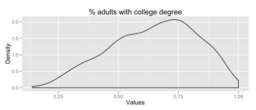 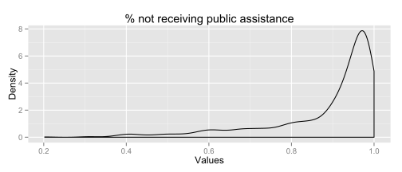 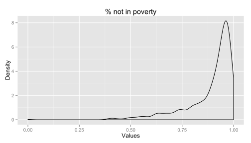 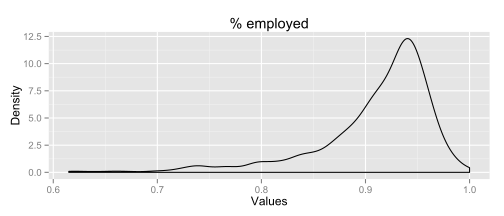 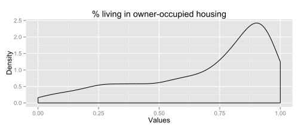 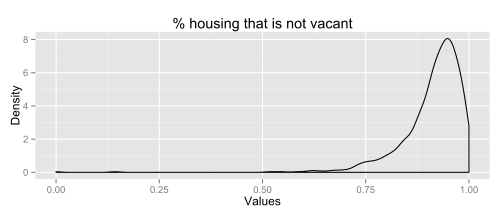 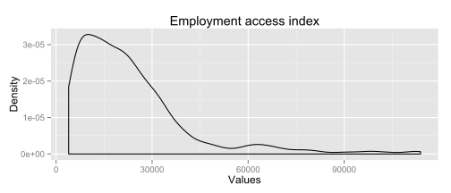 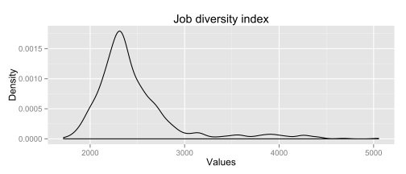 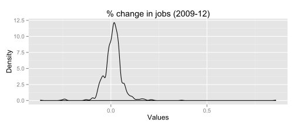 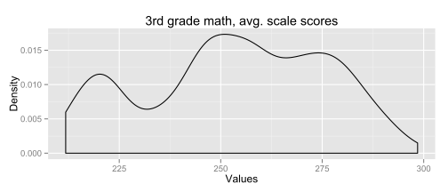 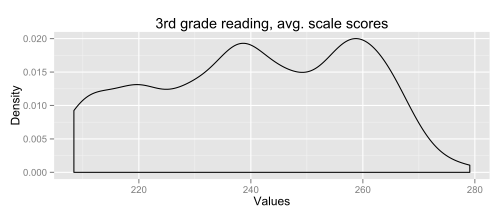 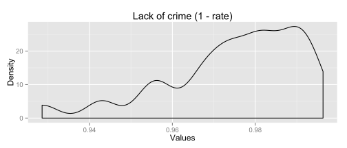
Methodology
Calculating z-scores for the index
The distribution of values shown above is important because it directly influences how the index is calculated. The Opportunity Index uses z-scores to scale the component variables and calculate the index.
Z-scores are a way to standardize data by reporting how many standard deviations an observation is from the average value. The interpretation of the z-scores depends on how the data are distributed. If data are distributed normally ('bell-curve' style), the z-scores can tell us roughly how much of the data is below or above a certain z-score. You can then also compare z-scores for different bell-curve-shaped data sets - the z-scores mean the same thing if the underlying distributions have the same shape.
If the data are not normally distributed - if, for instance, they are skewed or there are multiple modes in the data - then the z-scores can be harder to interpret. And it's also harder to compare the z-scores across variables - a z-score of 2 for poverty doesn't mean the same thing as a z-score of 2 for reading test scores if they don't have the same-shaped distribution.
This matters since the opportunity index is calculated using the average z-scores across all of the variables. The OECD guide to composite indicators notes that using z-scores means that "indicators with extreme values thus have a greater effect on the composite indicator." That can be an issue in a state with a high degree of inequality and concentration of poverty. If the variables have different distributions, then the z-scores will have different ranges and the z-scores won't have the same interpretation or influence on the final index values.
The charts below show the standardized results for each variable. The z-scores between -/+2 standard deviations are shown for each variable. Variables like poverty, public assistance, unemployment tend to have similar shapes and are skewed positive - there are many above-average tracts, but a long tail of tracts with below-average scores on these variables.
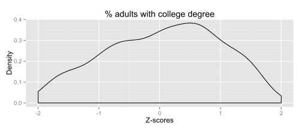 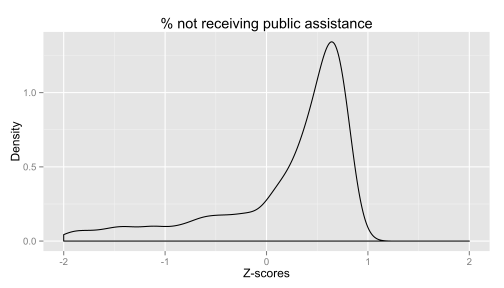 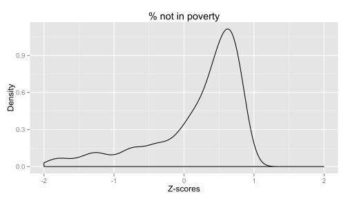 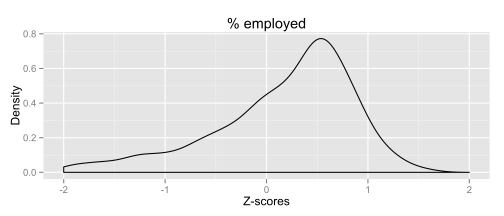 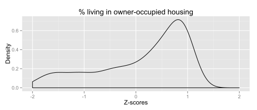 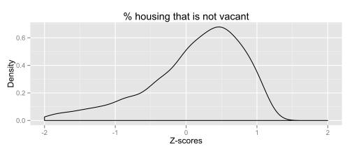  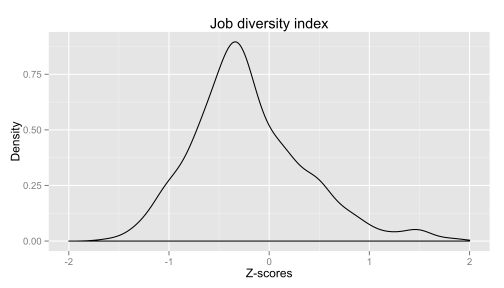 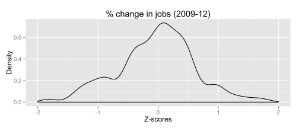 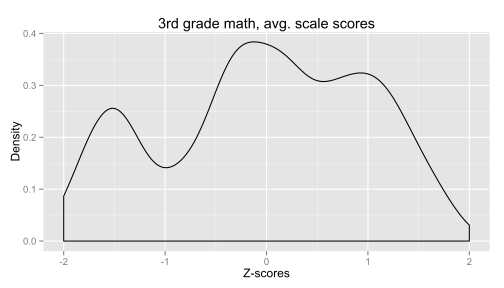 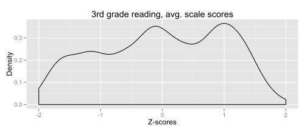 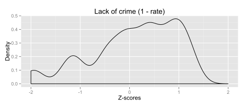
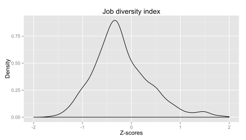 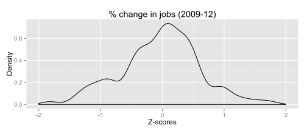 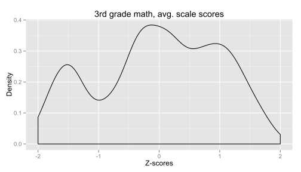 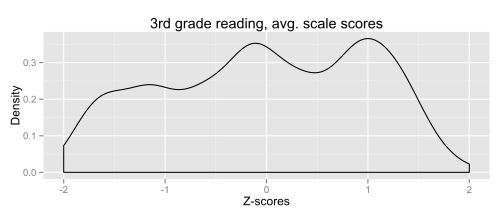 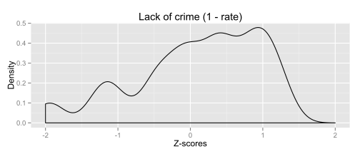
We can then calculate the opportunity index as the average of the z-scores of the individual variables. The map below shows the updated index for the state.

The Kirwan Institute mapping uses quintiles to color the maps, which means 1/5th of the tracts will fall into each color category.
Another way to see this is to plot the distribution of the index values for the tracts, including the breakpoints. The chart below shows the breakpoints using the quintiles. (Again, the overall distribution is skewed positive.)
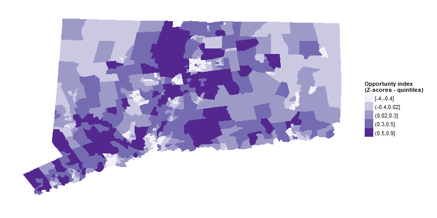
Using quintiles means that roughly 20 percent of the population will always live in high opportunity areas (since census tracts have roughly similar population).
What is driving the Opportunity Index?
With a composite index, it helps to see if specific variables are playing more of a role in determining the final index values.
As a start, we know that many of the variables are correlated with each other - the correlation matrix below shows that several of the variables - poverty, public assistance, etc. - are correlated with each other. Job change (economic climate) has almost no correlation with any of the variables.
| % adults with college degree | % not receiving public assistance | % not in poverty | % employed | % living in owner-occupied housing | % housing that is not vacant | Employment access index | Job diversity index | % change in jobs (2009-12) | 3rd grade math, avg. scale scores | 3rd grade reading, avg. scale scores | Lack of crime (1 - rate) | |
|---|---|---|---|---|---|---|---|---|---|---|---|---|
| % adults with college degree | 1.00 | 0.77 | 0.65 | 0.69 | 0.66 | 0.30 | -0.34 | -0.23 | 0.05 | 0.69 | 0.70 | 0.53 |
| % not receiving public assistance | 0.77 | 1.00 | 0.88 | 0.80 | 0.81 | 0.45 | -0.60 | -0.29 | 0.02 | 0.66 | 0.64 | 0.67 |
| % not in poverty | 0.65 | 0.88 | 1.00 | 0.73 | 0.84 | 0.56 | -0.63 | -0.35 | 0.02 | 0.64 | 0.62 | 0.65 |
| % employed | 0.69 | 0.80 | 0.73 | 1.00 | 0.66 | 0.35 | -0.52 | -0.20 | -0.03 | 0.54 | 0.53 | 0.54 |
| % living in owner-occupied housing | 0.66 | 0.81 | 0.84 | 0.66 | 1.00 | 0.49 | -0.65 | -0.35 | -0.00 | 0.66 | 0.64 | 0.64 |
| % housing that is not vacant | 0.30 | 0.45 | 0.56 | 0.35 | 0.49 | 1.00 | -0.24 | -0.27 | -0.02 | 0.32 | 0.29 | 0.29 |
| Employment access index | -0.34 | -0.60 | -0.63 | -0.52 | -0.65 | -0.24 | 1.00 | 0.15 | 0.09 | -0.48 | -0.46 | -0.67 |
| Job diversity index | -0.23 | -0.29 | -0.35 | -0.20 | -0.35 | -0.27 | 0.15 | 1.00 | -0.05 | -0.37 | -0.36 | -0.41 |
| % change in jobs (2009-12) | 0.05 | 0.02 | 0.02 | -0.03 | -0.00 | -0.02 | 0.09 | -0.05 | 1.00 | 0.03 | 0.05 | 0.00 |
| 3rd grade math, avg. scale scores | 0.69 | 0.66 | 0.64 | 0.54 | 0.66 | 0.32 | -0.48 | -0.37 | 0.03 | 1.00 | 0.96 | 0.77 |
| 3rd grade reading, avg. scale scores | 0.70 | 0.64 | 0.62 | 0.53 | 0.64 | 0.29 | -0.46 | -0.36 | 0.05 | 0.96 | 1.00 | 0.76 |
| Lack of crime (1 - rate) | 0.53 | 0.67 | 0.65 | 0.54 | 0.64 | 0.29 | -0.67 | -0.41 | 0.00 | 0.77 | 0.76 | 1.00 |
Principal components analysis is another way to see the key factors that determine the final index. A principal components analysis of the index data shows that the first principal component dominates the results - explaining 56 percent of the overall variance in the data (first bar in the graph, first column in the table).
| PC1 | PC2 | PC3 | PC4 | PC5 | PC6 | PC7 | PC8 | PC9 | PC10 | PC11 | PC12 | |
|---|---|---|---|---|---|---|---|---|---|---|---|---|
| Standard deviation | 2.5833 | 1.0526 | 0.9919 | 0.9760 | 0.8644 | 0.7534 | 0.5534 | 0.4528 | 0.4384 | 0.3793 | 0.2920 | 0.1875 |
| Proportion of Variance | 0.5561 | 0.0923 | 0.0820 | 0.0794 | 0.0623 | 0.0473 | 0.0255 | 0.0171 | 0.0160 | 0.0120 | 0.0071 | 0.0029 |
| Cumulative Proportion | 0.5561 | 0.6484 | 0.7304 | 0.8098 | 0.8721 | 0.9194 | 0.9449 | 0.9620 | 0.9780 | 0.9900 | 0.9971 | 1.0000 |
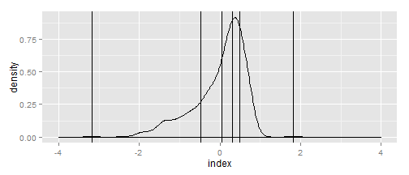
We can look at the weights for each of the variables in the first principal component in the chart below. This shows that job growth has little influence on the first component (weight close to 0), while job diversity and access to employment offset some of the other variables (positive weight). Poverty, public assistance and owner-occupied housing have the strongest weights. In other words, access to jobs and job diversity are counterbalanced by areas with high poverty and low home-ownership - which roughly matches the patterns in the maps of the index components above.
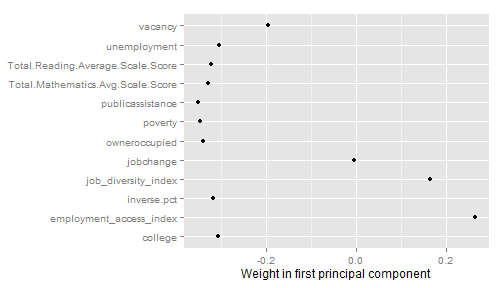
Not surprisingly, many of the same variables have very skewed distributions across Connecticut neighborhoods, and hence a more extreme range of z-scores to factor into the overall index.